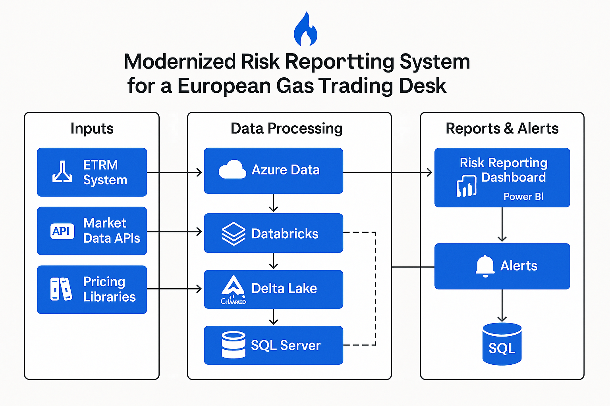

Modernized Risk Reporting for a European Gas Trading Desk
A leading European gas trading desk struggled with slow, manual risk reporting workflows using fragmented spreadsheets and outdated tools. The lack of real-time data, poor audit trails, and delayed risk visibility hindered both compliance and decision-making.
🛠️ Solution Overview
Our team delivered GasRisk360, an end-to-end risk reporting platform powered by modern data architecture. The system automatically ingests trade, pricing, and market data; processes it using distributed analytics engines; and delivers rich, real-time insights via intuitive dashboards.

Architecture of the Modernized Risk Reporting System
💡 Key Capabilities
Real-time ingestion of trades, exposures, and market data
Advanced risk metrics: VaR, PnL breakdown, stress scenarios
Automated alerting for breaches and anomalies
Audit-ready historical snapshots for EMIR/REMIT compliance
Centralized reporting via Power BI dashboards
🧩 Tech Stack
Azure Data Lake: Raw data staging and archival
Databricks (PySpark): Distributed analytics and transformation
Delta Lake: Unified lakehouse layer with ACID guarantees
SQL Server: Structured queryable store for risk data marts
Power BI & Streamlit: Dashboards and alert interfaces
📈 Business Impact
4x faster risk reporting (from 4 hours to under 30 mins)
Enhanced visibility across front office, risk, and compliance
Zero-touch automation reduced manual intervention by 90%
Scalable architecture ready for multi-commodity expansion